In the lab · Preliminary
The results, so far.
The coating is made and on fabric. Here is what the measurements say, including the parts that still need work. Nothing here is final, and no figure is signed off yet.
Last updated 5 July 2026 · all values preliminary
The samples
Seven coatings, two fabrics.
Everything is compared on the same footing: plain cotton and Finisterre's own fabric, each with an uncoated control, my emulsion on its own, and the emulsion loaded with titanium dioxide. Finisterre's commercial DWR finish is the benchmark I am trying to match.
- C-U / F-U. Uncoated cotton and uncoated Finisterre, the controls.
- A1. My emulsion only, no particles.
- B3. Emulsion plus 3 wt% bare anatase titanium dioxide.
- C3. Emulsion plus 3 wt% silane-treated anatase (the VTMS tweak).
- F-DWR. Finisterre's existing commercial finish, the benchmark.
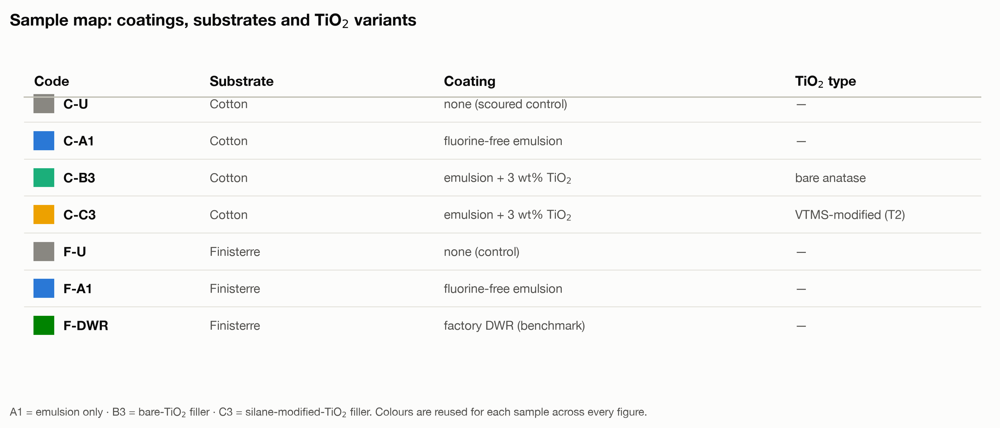
Repellency
Every coating makes water bead.
Water contact angle is the first test: how spherical a droplet sits on the surface. Above 90° is hydrophobic, and the superhydrophobic target is 150°. Every coating I made clears the hydrophobic line comfortably and holds around 130°, right alongside the commercial finish.
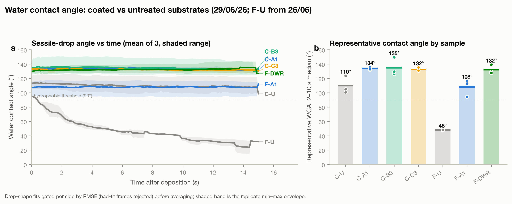
- The honest caveat. Static contact angle does not separate the two particle treatments, bare versus silane-treated. If the silane helps, it should show up in shedding and durability, not here.
- A control to fix. Uncoated cotton sits around ~110°, likely a residual factory finish rather than true repellency. Scouring the cotton before coating should strip that and show the coating's real benefit.
Shedding
Beading is not the same as shedding.
This is the honest part. A high contact angle means a drop sits as a bead, but roll-off angle asks the harder question: does it actually run off a tilted surface? Here the commercial finish is still ahead.
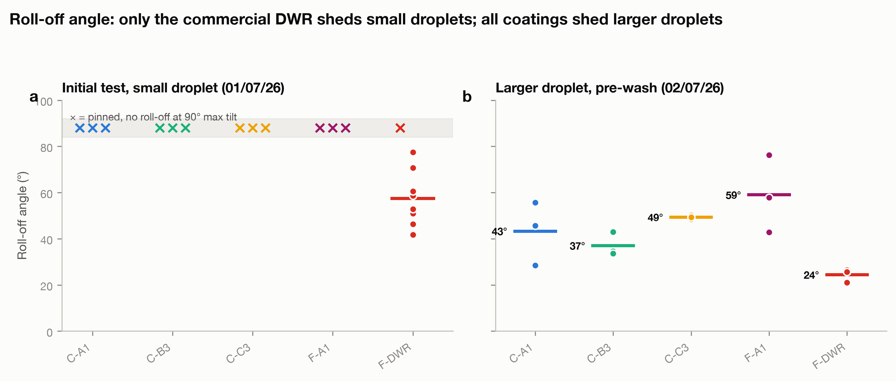
| Sample | What it is | Roll-off angle |
|---|---|---|
| F-DWR | Commercial benchmark | ~24° |
| C-B3 | Emulsion + bare anatase | ~37° |
| C-A1 | Emulsion only | ~43° |
| C-C3 | Emulsion + silane-treated anatase | ~49° |
| F-A1 | Emulsion only, on Finisterre | ~59° |
What this means. My coatings match the commercial finish on how water beads, but on a fresh sample not yet on how easily it sheds. The gap is contact angle hysteresis, the drop grips as it tries to move. That is the specific thing the next emulsion re-run is designed to fix. Under repeated wear this ranking changes, as shown in the next section.
Durability
The coatings hold up to washing and wear.
A coating is only useful if it lasts. I put the whole sample set through repeated washing and hand abrasion, re-measuring roll-off and contact angle at each stage to see whether the coatings hold up in use.
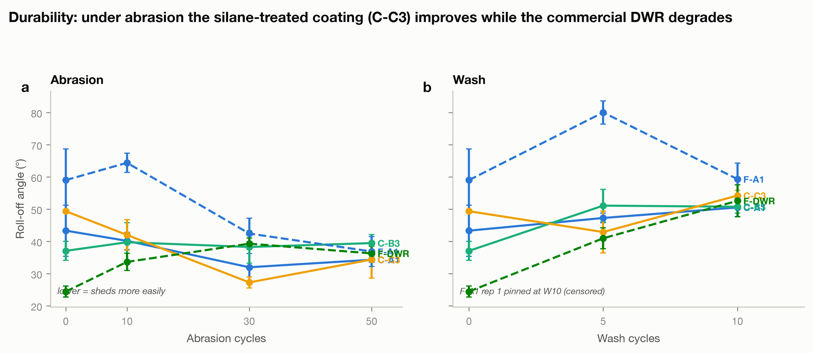
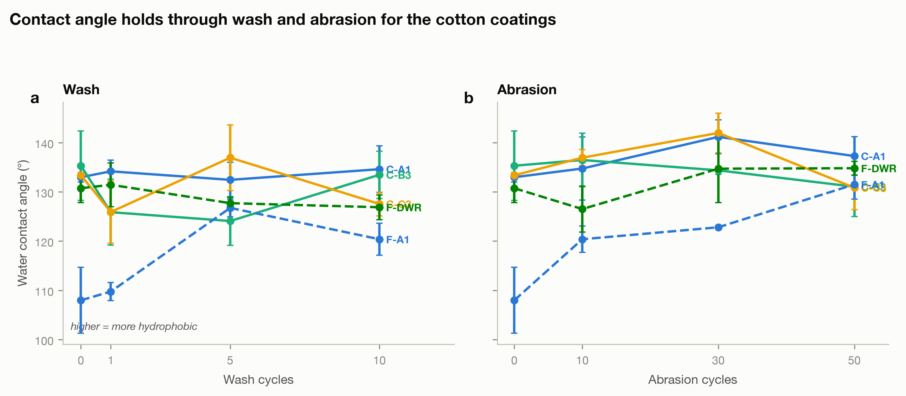
What this means. On a fresh sample the commercial finish sheds better, but the durability results change that. The silane-treated coating C-C3 improves under abrasion while the commercial finish worsens, so by 30 to 50 cycles they shed about equally, and every cotton coating keeps its contact angle through washing and wear. The sample is small (n = 3), so these are trends rather than firm statistics, but the direction is consistent across the samples.
Composition
What is actually on the fabric.
SEM-EDX reads the elements on the fibre surface. Titanium tracks the titanium dioxide I added, and silicon tracks the silicone and silane in the coating. Both show up exactly where they should, and the commercial finish looks chemically nothing like mine.
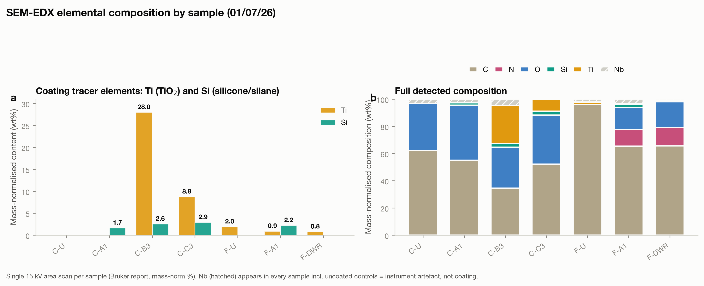
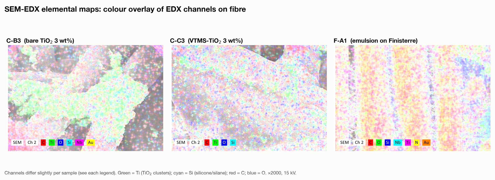
Chemistry
The right bonds are there.
Infrared spectroscopy checks the chemistry rather than the elements. On the fabric it confirms the coating is deposited and has formed a siloxane network. On the titanium dioxide powder it is where I can actually see the silane grafting.
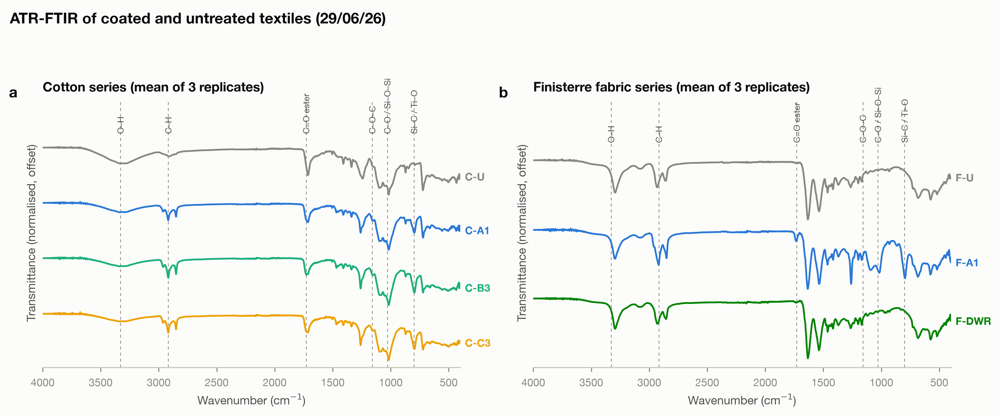
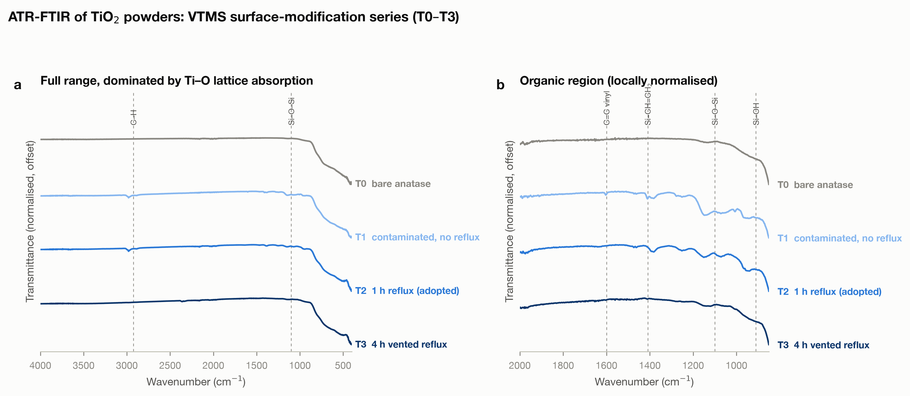
Digging deeper
Supporting structure and corroboration.
These back up the headline results: an independent check on the titanium signal, the particle and coating morphology under the microscope, and the smaller supporting measurements.
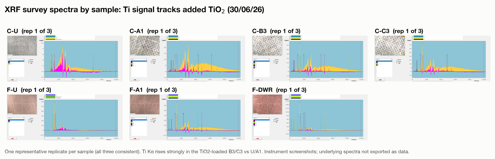
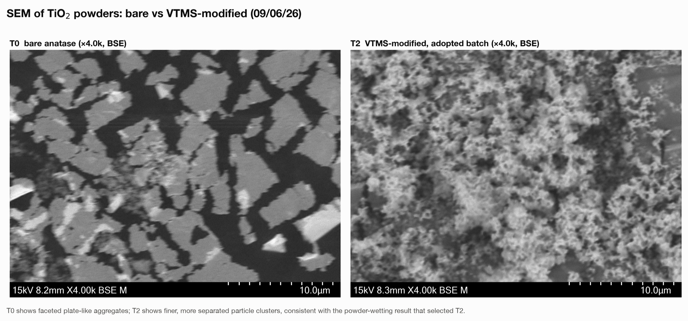
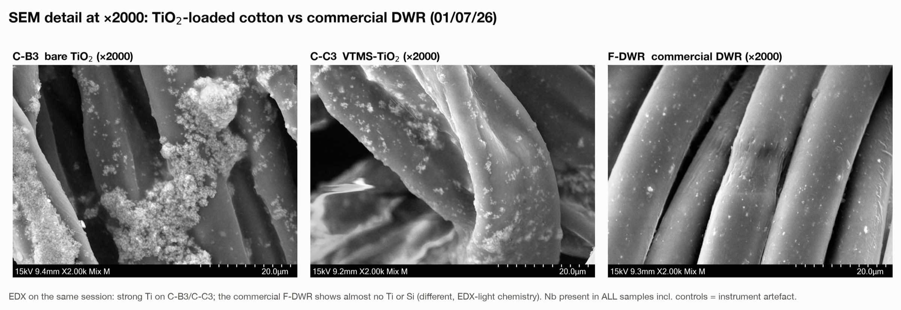
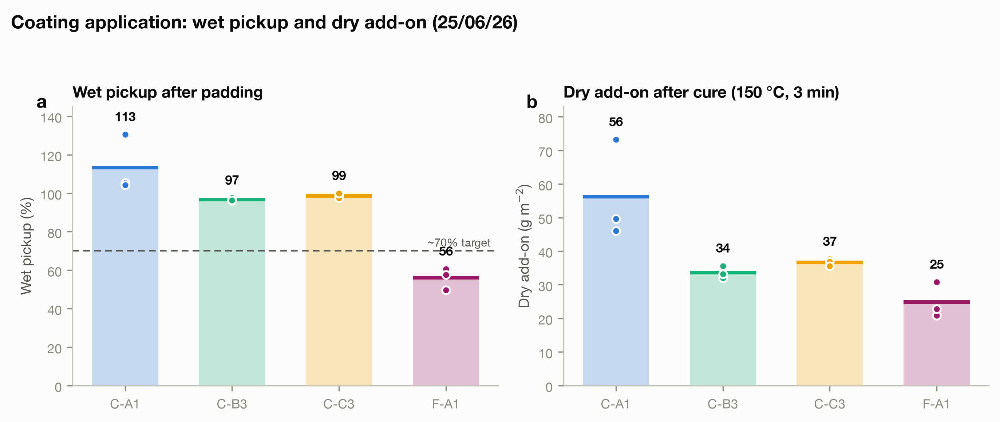
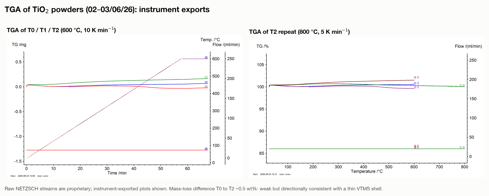
What's next
The part that actually decides it.
My coatings match a commercial DWR on how water beads, and on a fresh sample the commercial finish still sheds a little better. Under wear that difference narrows and then reverses. Two things follow from that.
- Fix the fresh shedding. Re-run the emulsion to cut the contact angle hysteresis, on properly scoured cotton, so the fresh roll-off catches up to the contact angle from the start, not just after wear.
- Firm up the durability. The abrasion and wash results are in: C-C3 sheds better than the commercial finish under abrasion, and every cotton coating holds its contact angle. Next is more cycles and more replicates to confirm the effect.
A note on these numbers. Everything here is preliminary and none of it is public-final. No figure goes out as a result until my supervisor has signed it off.